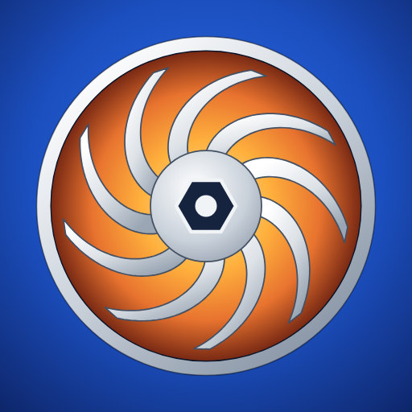

We read every message and usually reply within two business days.
Email supportOr write to angeltechcorporationindustries@gmail.com. When something looks wrong, a screenshot and the engine type you were working on help us find it quickly.
It is free to download, with no ads and no account to make. Free: sizing a turbojet, its results, drawings and 3D picture, the limit checks and its first flat pattern. ThrustWright Pro ($19.99 a month or $149.99 a year in the United States, no free trial) adds the turbocharger jet, pulsejet and ramjet, the flat pattern and drill table of every part, and saving your work as files. Everything that needs it is marked PRO.
Sign in with the same Apple Account, then open Safety, scroll to ThrustWright Pro and tap Restore purchases.
In the app: Safety › ThrustWright Pro › Manage subscription. Or on your iPhone or iPad: Settings › your name › Subscriptions › ThrustWright. Cancel at least 24 hours before the renewal date; Pro stays open until the end of the period you paid for. Refunds are handled by Apple at reportaproblem.apple.com.
No. Everything is inside the app, so it works offline and in airplane mode. Only buying or restoring ThrustWright Pro needs a connection.
Pick the engine type at the top (Turbojet, or with ThrustWright Pro also Turbocharger jet, Pulsejet or Ramjet). On the Setup screen, start from a compressor wheel you already have or from the thrust you want, or tap a preset. Results, Drawing and Patterns update as you type.
Saving files is part of ThrustWright Pro. Open Patterns and tap Save all patterns (.zip). Your iPhone or iPad shows its share sheet: choose Save to Files, AirDrop, Mail or a printer. The zip holds a DXF and a 1:1 SVG drawing of every sheet-metal part, the drill tables as a CSV file and a design sheet.
With ThrustWright Pro, pattern saving still locks while a design is over a hard limit, so a part that should not be built is not cut. Open Safety to see which limit it is and what to change.
Every SVG drawing has a 50 mm check bar. Print at 100% (no “fit to page”), then measure the bar before you cut.
They are first-cut sizing numbers. The turbojet model runs two published engines through the same code on the Model check tab: the KJ66 lands within 8% on thrust, exhaust temperature, size and mass, and the Wren MW54 within 2% on pressure ratio, air flow and casing size and 16% high on thrust. Pulsejet thrust is good to about ±50%. Check every dimension and limit yourself before you build.
On your device, inside the app: tap Designs at the top to save, open or delete one (up to 40). They don’t move between devices, and deleting the app deletes them.
Tap mm or inch at the top of the app.
Jet engines are dangerous. ThrustWright’s numbers are estimates, not a certified design. Read the Terms of Use and follow the test-stand rules on the app’s Safety screen. Do not use it for any engine that carries people.
iPhone and iPad with iOS 15 or later.